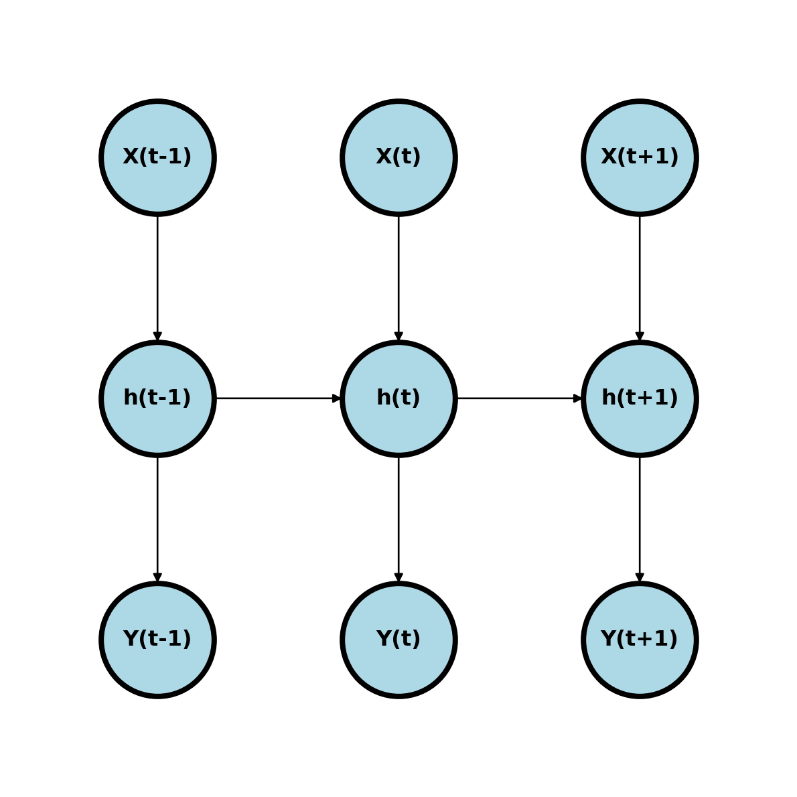
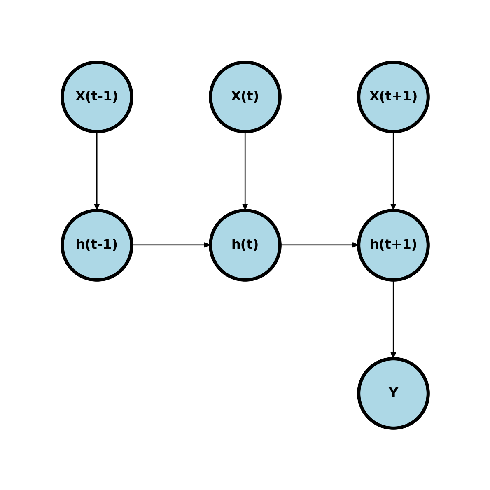
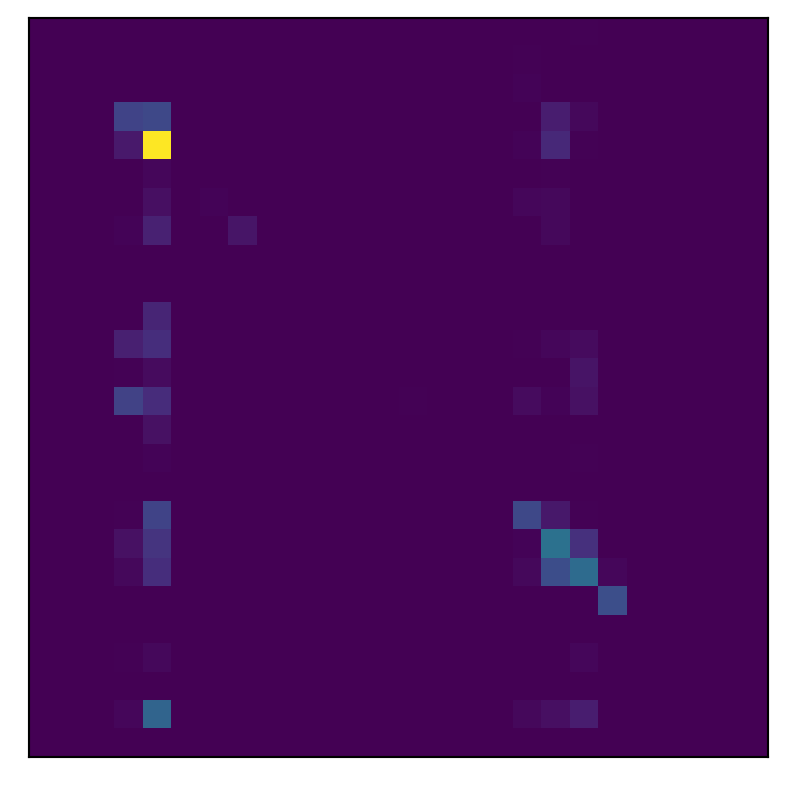

40 RNNs
Recurrent neural networks (RNNs) are commonly used for ordered data, such as in time series analysis or text processing.
It might be worth considering some existing common time series models first.
40.0.1 Linear time sieres models
40.0.1.1 Stochastic time series models
Perhaps the most popular version of stochastic time series models is the autoregressive (AR) models. Here’s an AR(1) model \[ Y_t = \beta_0 + Y_{t-1}\rho + \epsilon_t \]
Generalizations allow for longer lags, called AR(p) models where p is the number of lags. We could instead have the error terms have dependence in so called moving average (MA) models. Here’s an MA(1)
\[ Y_t = \beta_0 + Y_{t-1}\rho + \epsilon_t + \gamma \epsilon_{t-1} \] where, again, longer lags can be incorporated. We could combine these models in ARMA models. Here’s an ARMA(1,1) model
\[ Y_t = \beta_0 + Y_{t-1}\rho + \epsilon_t + \gamma \epsilon_{t-1} \]
RNNs get their name since the hidden layers point to themselves. This is already well explored in time series analyses, where we can have models such as AR models:
Differencing, i.e. considering \(Y_t - Y_{t-1}\) can be thought of as looking at a linear approximation to the derivative of the \(Y_t\) process. Second order differencing simply looks at \((Y_t - Y_{t-1}) - (Y_{t-1} - Y_{t-2})\) is then approximating the second derivative and so on. ARIMA models look at ARMA models on differenced data. So, an ARIMA model can be specified with three numbers the AR part, the MA part and the differencing part.
Stochastic models are especially useful in things like finance for modeling asset prices. This is because efficient market theory suggests no explanatory variables are needed so looking at the time series and so modeling the data this way is often useful.
40.0.1.2 Functional outcomes
Instead of modeling the outcome time series as a stochastic process, we might be interested in modeling it as a function using a smoother. For example we might model \[ Y_t = f(t) + \epsilon = z_t \beta + \epsilon \] where \(z_t\) is a basis element from a smoother matrix. An example is regression splines.
40.0.1.3 Explanatory time series models
Consider regression models for \(Y ~|~ X\) where \(Y\) and \(X\) are time series. We might consider concordant models
\[ Y_t = \beta_0 + \beta_1 X_t + \epsilon_t \]
Distributed lag models \[ Y_t = \alpha + \beta_0 X_t + \beta_1 X_{t-1} + \ldots + \beta_p X_{t-p} + \epsilon_t \]
Markov models model \(Y_t ~|~ Y_{t-1}, \mbox{Other covariates}\). So, we can model \[ Y_t = \alpha + \beta_0 Y_{t-1} + \epsilon_t. \]
Not unlike the MA models, in all of these cases we can model dependence in the \(\epsilon\) terms.
40.0.1.4 Functional predictors
Consider the instance where \(Y\) is not a time series, but \(X_{i}\) is for each \(i\). Let’s write this as a function, \(x_i(t)\). We then need to relate an entire time series to each \(Y\) value. We might consider models of the form \[ Y_i = \alpha + \int \beta(t) x_i(t) dt + \epsilon_i \]
40.0.1.5 Summarizing linear time series models
(base) bcaffo@penguin:~/sandboxes/advanced_ds4bio_book$ In summary, there’s quite a few ways to model time series data lineary. And you can combine methods and extend them to generalized linear model settings.
40.0.2 RNNS
RNNs have many variations, the same as linear time series models. They are called recurrent, since they point to themselves. Let’s look at a simple RNN where we have a time series, \(X_{it}\) and we want to predict a concordant time series, \(y_t\). Consider a model \(h_t = \mathrm{expit}(w_0 + w_1 h_{t-1} + w_2 x_{t})\) and \(\hat Y_t = \mathrm{expit}(w_3 + w_4 h_t)\) (Elman 1990).
Notice, the prior hidden nodes point to the subsequent nodes. This builds in the history of the network.
We can also have networks that point to single outcomes

40.0.3 Example character prediction
I used this tutorial by Eduardo Muñoz and the pytorch character prediction tutorial here.
Let’s predict the last letter of words from Shakespeare’s writing from the previous words. Using this, you should be able to extrapolate how to create a character prediction algorithm and from that a word prediction algorithm.
I got the training text from here with a simple url request.
import torch
from torch import nn
from torch.autograd import Variable
import numpy as np
import string
import nltk
from urllib import requesturl = "https://raw.githubusercontent.com/karpathy/char-rnn/master/data/tinyshakespeare/input.txt"
urlresponse = request.urlopen(url)
text = urlresponse.read().decode("ascii")
text_words = nltk.tokenize.word_tokenize(text.lower())
##remove all of the non alpha characters like commas, periods ...
text_words = [word for word in text_words if word.isalpha() and len(word) > 2]
## Test whether all 26 letters are represented
#text_letters = set([l.lower() for l in text if l.isalpha()])
#len(text_letters)
## All characters are represented
## The lowercase letters as a list
import string
letters = string.ascii_lowercase
n_letters = len(letters)
## one hot encode each letter then create a matrix for each word
def word_encode(word):
n_word = len(word)
input_tensor = torch.zeros(len(word) - 1, 1, n_letters)
for i in range(n_word - 1):
l = word[i]
input_tensor[i, 0, letters.find(l)] = 1
output_category = letters.find(word[i + 1])
return input_tensor, output_category
test_word = text_words[0]
test_predictor, test_outcome = word_encode(test_word)
print(test_word)
print(test_predictor.shape)
print(test_outcome)first
torch.Size([4, 1, 26])
19Let’s create a list of our predictor tensor and outcome categories.
N = len(text_words)
predictor_list = []
outcome_list = []
for i in range(N):
w = text_words[i]
p, o = word_encode(w)
predictor_list.append(p)
outcome_list.append(o)
outcome_tensor = torch.tensor(outcome_list)Here’s the RNN from their tutorial
import torch.nn as nn
class RNN(nn.Module):
def __init__(self, input_size, hidden_size, output_size):
super(RNN, self).__init__()
self.hidden_size = hidden_size
self.i2h = nn.Linear(input_size + hidden_size, hidden_size)
self.i2o = nn.Linear(input_size + hidden_size, output_size)
self.softmax = nn.LogSoftmax(dim=1)
def forward(self, input, hidden):
combined = torch.cat( (input, hidden), 1)
hidden = self.i2h(combined)
output = self.i2o(combined)
output = self.softmax(output)
return output, hidden
def initHidden(self):
return torch.zeros(1, self.hidden_size)
n_hidden = 256
rnn = RNN(n_letters, n_hidden, n_letters)
test_hidden = rnn.initHidden()
test_input_val = test_predictor[0]
print(test_input_val.shape)
print(rnn.forward(test_input_val, test_hidden))torch.Size([1, 26])
(tensor([[-3.3381, -3.2485, -3.2767, -3.2137, -3.2885, -3.3076, -3.2883, -3.2156,
-3.2217, -3.2520, -3.2511, -3.2871, -3.2287, -3.2188, -3.3096, -3.3098,
-3.2019, -3.3194, -3.1957, -3.2970, -3.1753, -3.2012, -3.1848, -3.3199,
-3.2404, -3.3520]], grad_fn=<LogSoftmaxBackward0>), tensor([[-0.0013, -0.0435, 0.0086, -0.0143, -0.0364, 0.0274, 0.0485, -0.0393,
0.0899, 0.0543, -0.0005, -0.0471, -0.0413, -0.0323, -0.0427, 0.0227,
0.0578, 0.0357, -0.0011, -0.0085, 0.0268, 0.0125, 0.0230, 0.0643,
-0.0942, -0.0305, -0.0443, -0.0146, -0.0595, -0.0409, 0.0372, -0.0339,
-0.0510, 0.0621, -0.1127, 0.0150, -0.0294, 0.0704, -0.0892, -0.0139,
-0.0704, -0.0267, -0.0880, 0.0524, -0.0875, -0.1012, 0.0767, -0.0044,
-0.0228, -0.0394, 0.0099, -0.0818, -0.0982, 0.1004, -0.0879, 0.0614,
0.0893, 0.0770, 0.0391, -0.0381, 0.0756, 0.0168, 0.0562, -0.0552,
-0.0918, 0.0413, 0.0193, 0.0966, 0.0080, -0.0568, 0.0277, 0.0265,
-0.0365, -0.0594, -0.0051, -0.0400, -0.0092, 0.0910, 0.0708, -0.0052,
-0.0601, 0.0435, 0.0090, -0.0966, 0.0394, 0.0018, -0.0378, 0.0512,
-0.0446, 0.0325, -0.0561, 0.0574, -0.0011, 0.0196, -0.0781, 0.0355,
0.0415, 0.0482, -0.0408, -0.0595, -0.0942, 0.0025, 0.0155, -0.0726,
-0.0565, 0.0640, 0.0051, -0.0222, -0.0032, 0.0113, 0.0389, -0.0155,
-0.0006, -0.0319, 0.0175, 0.0565, 0.1069, -0.0168, -0.0020, -0.0880,
-0.0048, 0.0293, 0.0107, -0.0582, 0.0498, 0.0338, -0.0031, -0.0308,
-0.0184, 0.0854, -0.0405, 0.0083, -0.0401, -0.0539, 0.0490, -0.0239,
-0.0295, 0.0083, -0.0473, 0.0879, 0.0253, -0.0464, 0.0191, -0.0143,
-0.0412, -0.0516, -0.1057, 0.1018, 0.0364, -0.0042, 0.0135, -0.0119,
-0.0623, 0.0403, -0.0059, 0.0063, -0.0364, -0.0262, 0.0322, 0.0372,
-0.0994, 0.1002, 0.0134, 0.0081, -0.0170, 0.0035, -0.0264, -0.0371,
0.0778, -0.0026, 0.0667, 0.0500, -0.0045, 0.0349, 0.0739, -0.0117,
-0.1048, 0.0454, -0.1024, -0.0941, 0.0191, 0.0307, 0.0098, 0.0127,
-0.0105, -0.0386, -0.0108, 0.0093, 0.0077, -0.0052, -0.0371, -0.1089,
-0.0286, -0.0103, -0.0785, -0.0609, 0.0872, 0.0061, 0.0044, 0.0832,
0.0515, -0.0421, -0.0065, -0.0579, 0.0398, -0.0708, -0.1013, -0.0915,
0.0621, 0.0522, 0.0824, -0.0771, 0.0080, 0.0251, -0.0091, -0.0181,
0.0419, -0.0933, -0.0443, -0.0569, 0.0176, -0.0018, -0.0278, -0.0039,
0.0612, -0.0427, 0.0208, 0.0213, 0.0329, -0.0248, -0.0737, -0.0195,
0.0140, -0.0174, -0.0153, 0.0689, 0.0076, 0.0433, 0.0130, -0.0587,
-0.0623, -0.0746, -0.0483, 0.0518, 0.0080, 0.0236, 0.0294, -0.0690,
-0.0093, 0.0133, -0.0102, 0.0605, 0.0767, 0.0132, 0.0145, -0.0029]],
grad_fn=<AddmmBackward0>))import torch.optim as optim
criterion = nn.NLLLoss()
#criterion = nn.CrossEntropyLoss()
learning_rate = 1e-4
epochs = 1000
batch_size = 100
optimizer = optim.Adam(rnn.parameters(), lr = learning_rate)
## This runs the first few characters of a word
## through the RNN
def predict(input_tensor):
prompt_length = input_tensor.size()[0]
h = rnn.initHidden()
for j in range(prompt_length):
o, h = rnn(input_tensor[j], h)
return o, h
for epoch in range(epochs):
## grab a random batch by grabbing random indices
batch_indices = np.random.choice(N, batch_size)
## initialize the predictions
output = torch.zeros(batch_size, n_letters)
## run through the batch
for i in range(batch_size):
index = batch_indices[i]
input_tensor = predictor_list[index]
o, h = predict(input_tensor)
output[i,:] = o
rnn.zero_grad()
loss = criterion(output, outcome_tensor[batch_indices])
loss.backward()
optimizer.step()Try some words:
## The confusion matrix
cm = np.zeros( (n_letters, n_letters) )
for i in range(1000):
input_tensor = predictor_list[i]
output = predict(input_tensor)[0]
actual = letters.find(text_words[i][-1])
guess = torch.argmax(output)
cm[actual, guess] += 1
plt.imshow(cm)
plt.xticks([])
plt.yticks([])([], [])
np.sum(np.diag(cm)) / np.sum(cm)0.428